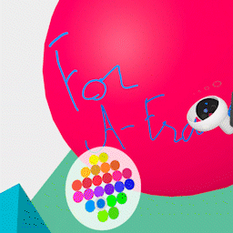
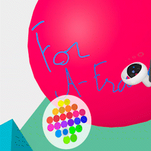

A-Frame Spatial-Marker
 

This simple VR component is made for A‑Frame projects and along the meta‑touch controls inputs. It allows users to draw in 3D space on defined drawing areas using one of their VR controllers.
This Spatial-Marker component embeds its own movement logic using the thumbsticks, so it can be used in any A-Frame scene without any other locomotion system but the use of teleport-controls isn't recommended due to the use of the color palette.
How to use
Place the spatial-marker.js script along with the latest A‑Frame version in the <head> section:
<script src="https://aframe.io/releases/1.7.1/aframe.min.js"></script>
<script src="https://rpetitjean.github.io/spatial-marker/spatial-marker.js"></script>
Place the spatial-marker component as part of your VR rig along the following structure using
meta‑touch controls:
<a-entity id="rig" spatial-marker>
<a-box id="camera" camera="fov:75; near:0.1; far:700" position="0 1.7 0" visible="false"></a-box>
<a-entity id="left-hand" meta-touch-controls="hand: left"></a-entity>
<a-entity id="right-hand" meta-touch-controls="hand: right"></a-entity>
</a-entity>Set up one or multiple drawing areas using the .drawingArea class:
<a-plane position="0 0 -4" rotation="-90 0 0" width="4" height="4"
color="#7BC8A4" opacity="0.0" transparent="true"
class="drawingArea"></a-plane>How it works
Examples
- Demo — a minimalistic scene and set up with one drawing area
- Export drawing — export all the lines drawn with the three.js glTF exporter
- Mixed Reality mode — Draw in Mixed Reality using WebXR AR mode (with compatible devices)
- Green Screen — use the spatial-marker to create fast hand-drawn designs with screen capture/recording
- Export photographs — export photographs of each painting zone
- Goethe's color diagram — an exploration of the singular color diagram by Johann Wolfgang von Goethe on the symbolic of colors
- Palette Builder (tool) — an easy tool to define the colors of the palette